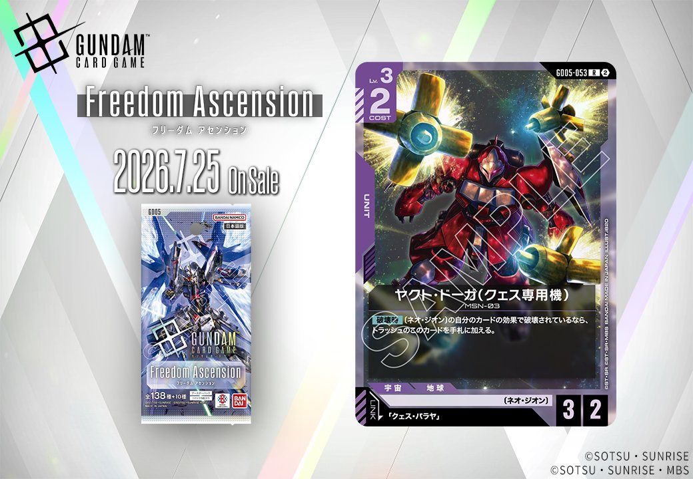

2026年7月25日発売のGD05から、紫色のPILOTカード「クェス・パラヤ」とUNITカード「ヤクト・ドーガ(クェス専用機)」の2枚が公開されました。ヤクト・ドーガ(クェス専用機)は「クェス・バラヤ」とのリンクが設定されており、専用機としての連携が期待されます。

クェス・パラヤ (G005-094)
| 色 | 紫 | タイプ | PILOT |
| Lv | 3 | コスト | 1 |
| 補正 AP | 1 | 補正 HP | 1 |
| 特徴 | 〔ネオ・ジオン〕、〔ニュータイプ〕 | ||
効果: 【バースト】このカードを手札に加える。【破壊時】〔ネオ・ジオン〕の自分のユニット1つを選ぶ。このターン中、それが相手からバトルダメージを受けるとき、そのダメージを2軽減する。
クェス・パラヤは〔ネオ・ジオン〕デッキで防御的な役割を果たすLv.3パイロット。【バースト】で手札に加えられ、【破壊時】に味方〔ネオ・ジオン〕ユニット1つのバトルダメージを2軽減する効果は、重要なユニットを守る保険として機能する。 コスト1で手札補充と破壊時の防御効果を持つため、紫系デッキの後半戦を支える選択肢となりそうだ。


ヤクト・ドーガ(クェス専用機) (GD05-053)
| 色 | 紫 | タイプ | UNIT |
| Lv | 3 | コスト | 2 |
| AP | 3 | HP | 2 |
| 特徴 | 〔ネオ・ジオン〕 | ||
| リンク条件 | 「クェス・バラヤ」 | ||
効果: 【破壊時】〔ネオ・ジオン〕の自分のカードの効果で破壊されているなら、トラッシュのこのカードを手札に加える。
ヤクト・ドーガ(クェス専用機)は、〔ネオ・ジオン〕の自分のカード効果で破壊された場合に手札に戻る【破壊時】効果を持つLv.3ユニット。コスト2でAP3/HP2と標準的なスタッツだが、自己破壊系の〔ネオ・ジオン〕効果と組み合わせることで繰り返し使い回せる点が特徴的。 クェス・バラヤとのリンクが可能で、2026年7月25日発売予定のカードとして〔ネオ・ジオン〕デッキの新たな選択肢となりそうだ。
関連カード
-
 三日月・オーガス(ST05-010)紫系デッキ内採用率37.4% (1196デッキ)
三日月・オーガス(ST05-010)紫系デッキ内採用率37.4% (1196デッキ) -
 ガンダム・バルバトスアダプト(GD03-056)紫系デッキ内採用率37.3% (1194デッキ)
ガンダム・バルバトスアダプト(GD03-056)紫系デッキ内採用率37.3% (1194デッキ) -
 ガンダム・バルバトス（第1形態）(GD02-054)紫系デッキ内採用率36.7% (1174デッキ)
ガンダム・バルバトス（第1形態）(GD02-054)紫系デッキ内採用率36.7% (1174デッキ) -
 グレイズ改(ST05-004)紫系デッキ内採用率33.7% (1079デッキ)
グレイズ改(ST05-004)紫系デッキ内採用率33.7% (1079デッキ) -
 百錬(ST05-006)紫系デッキ内採用率33.6% (1076デッキ)
百錬(ST05-006)紫系デッキ内採用率33.6% (1076デッキ) -
クェス・パラヤ(G005-094)NEW紫系 — 同色・共通特徴: ネオ・ジオン（新カード）